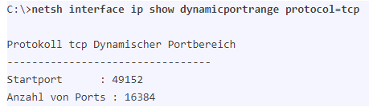
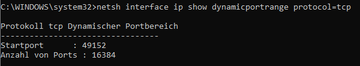

Das Szenario ist folgendes:
Connect-Box CH7465LG-LC
im
IPv6 DS-Lite Modus
, ein Windows 10 v20H2 PC über
Ethernet
angeschlossen.
Am PC laufen unterschiedliche Webbrowser, einer davon
Microsoft Edge Beta 91.0.864.27
(das ist die derzeit am 16.05.2021 aktuelle Version).
Fakt ist: Wenn ich
https://wetter.orf.at/oes/
aufrufe bricht die Internet-Verbindung ab (WebSite lädt bereits nicht mehr fertig, einige Grafiken fehlen noch) und
einen Moment später rebootet das Modem
.
Im Modem-Log findet sich danach lediglich
Cable Modem Reboot - due to power reset
, keine sonstigen Hinweise.
Gut, nun könnte man annehmen das Modem wäre defekt, aber nun kommts: Ich habe das Modem bereits ausgetauscht, habe nun das gleiche Modell wieder (Connect-Box CH7465LG-LC, diesmal mit "T"-Logo statt UPC-Logo an der Gehäusefront) erhalten. Problem weiterhin vorhanden.
Mit anderen Browsern wie Chrome, Firefox, Microsoft Edge Stable (also nicht Beta) etc... tritt das Problem nicht auf.
Nun da ich endlich draufgekommen bin was das Problem auslöst kann ich es einfach vermeiden - muss ja nicht mit Edge Beta 91.0.864.27 auf der ORF-Website das Wetter anschauen, aber da kommt man nun mal nicht so schnell drauf was die Ursache ist. Ich dachte ja tagelang bis zum Modem-Tausch es muss sich um ein Hardware-Problem am Modem handeln, erst als das Problem mit neuem Modem wieder auftrat ist mir der Zusammenhang mit dem ORF-Wetter aufgefallen und habe dies dann zahlreiche male verifiziert - hätte ich nicht für möglich gehalten. Andere problematische Website-Aufrufe sind mir noch nicht aufgefallen - solange ich nicht das ORF-Wetter abrufe läuft alles stabil und Modem-Signalwerte sowie Speedtest alles im optimalen Bereich.
Ausschalten der IPv6 Firewall am Modem sowie U-PNP deaktivieren ändert nichts am Verhalten.
Modem-Firmware-Update hat das Problem nicht behoben, ursprünglich war CH7465LG-NCIP-6.12.18.25-2p6-NOSH drauf, nach Update auf CH7465LG-NCIP-6.12.18.26-3p7-1-NOSH aber immer noch das gleiche Verhalten.
Ein Wireshark-Dump hat mich bei der Analyse bislang auch nicht weiter gebracht. Ich gehe angesichts dieser Erkenntnisse davon aus, dass es sich hier um ein Firmware-Problem des Modems bei der Analyse von IPv6 Traffic handeln muss.
Also, wenn euer Modem auch plötzlich rebootet und sich im Log nur "Cable Modem Reboot - due to power reset" findet, dann behaltet mal im Auge ob das mit den gleichen Website-Aufrufen die ihr unmittelbar vor dem Reboot geladen habt vielleicht auch reproduzierbar ist.
IT-Freak
Würde das Netzteil mit getauscht?
Ich hatte heute erst wieder eine Leitung, wo irgendwie ein nicht passendes Netzteil im Einsatz war.
Es hört sich auf jeden Fall sehr spannend an
gunnar
Ja, Netzteil ist auch getauscht - das erhaltene Modem und Netzteil war originalverpackt. Auch das RJ45-Kabel habe ich schon getauscht.
Auch einen Einfluss der Stromversorgung schließe ich aus - andere Steckdose bereits versucht.
Und wie gesagt: Um das zu demonstrieren muss ich nichts anderes tun, als einfach nur die o.a. URL des ORF-Wetters mit Edge Beta aufzurufen. Frisch gebootetes Modem, ich rufe einfach nur diese URL auf und zack, Modem rebootet. Solange ich diese URL nicht aufrufe kein Problem, 5 Stunden lang Internet-Nutzung (surfen, Streamen) - alles stabil, dann ein Zugriff mit Edge-Beta auf o.a. URL und wieder zack, reboot.
Habe noch etwas gegoogelt und Fehlerberichte gefunden, dass Leute mit dem Modem keine größeren GIT-Push-Vorgänge mehr zustande bekommen, selber Effekt - Modem reboot.
Als Lösung wurde genannt:
It's faulty firmware, this did not happen with CH7465LG-NCIP-6.12.18.24-5p4-NOSH. This issue is causing router restart when hairpin or loopback is being performed. With this error, you cannot use public IP or domain name inside your local network, because that is what causes reboot. It is couple of month now and still not fixed. You can ask your ISP to remotely downgrade to CH7465LG-NCIP-6.12.18.24-5p4-NOSH but the router updates itself anyway and ISP cannot stop it from doing so, so we are all screwed.
Wobei bei Zugriff auf die genannte Site definitiv kein Hairpinning im Spiel ist, Source (mein PC) und Destination (die Hosts die den ORF-Content ausliefern) kommunizieren beide über öffentliche IPv6-Adressen, meine Wireshark-Aufzeichnung zeigt zum betreffenden Zeitpunkt auch keinen anderen IPv4-Verkehr an - somit dürfte das Problem anders gelagert sein.
Bearbeitet
von gunnar
gunnar
Nachtrag: Tritt nicht nur mit der wetter.orf.at Seite auf, sondern auch mit anderen orf.at Nachrichten-Inhalten.
Bearbeitet
von gunnar
gunnar
Ich kann das Problem inzwischen auf beliebigen Windows-Geräten und auch unter Linux jederzeit zeigen, in meinem Blog-Beitrag beschreibe ich die Hintergründe und nötige Konfigurationsänderung:
Mach doch mal einen Hotspot von deinem Handy o.ä. und teste das wieder.
Ich hätte jetzt klar das Modem getauscht aber wenn du das schon gemacht hast und es klappt immer noch nicht, ist das mehr als interessant.
Im Prinzip aber läuft es ja mit allen anderen Browsern, evtl. ist in der Beta Version des einen Browsers echt ein heftiger Bug drinnen.
gunnar
Danke
@Christian_E
für den Vorschlag, den ich aber freilich längst geprüft habe.
Mit anderen Internet-Zugängen (Handy-Hotspots auf Android 11 oder iOS 14.5) tritt das Problem freilich nicht auf - es ist ein Modem-Firmware-Fehler der Connect-Box CH7465LG-LC.
Getriggert - wie in meinem
ausführlichen Blog-Post erläutert
- durch die rasche Wieder-Verwendung von niedrigen (1024, 1025, ...) TCP-Source-Port-Nummern beim Aufbau von HTTPS-Verbindungen. Das Problem ist - wie ich
am Ende meines Blog-Artikels zeige
- auch mit einem kleinen Linux-Shell-Script gezielt demonstrierbar.
Ich kann keinen Bug darin erkennen wenn man erstens Source-Ports ab 1024 wählt, und zweitens diese nach Abbau der TCP-Verbindung sofort für eine neue wiederverwendet, mir ist kein RFC bekannt dem dies widersprechen würde, bin aber für Hinweise diesbezüglich offen.
Christian_E
Alles klar. Da hast eh schon super Analysen gemacht.
Aber wie dramatisch ist es für dich? Handelt sich ja im Moment nur um ein Problem mit dem Beta Browser vom Edge.
Wird natürlich interessant zu sehen, ob die finale Version dann wieder läuft.
gunnar
Es geht in diesem Thread hier nicht darum meine persönliche Situation zu lösen. Ich selbst kenne die Hintergründe ja mittlerweile und weiß mir zu helfen. Aber vielen anderen Kunden geht es möglicherweise nicht so wie mir, die können sich nicht selbst helfen, bemerken lediglich das ihr Modem rebootet und wissen nicht warum. Denen soll dieser Thread und mein Blog-Post Hilfestellung bieten zu prüfen, ob sie auch von dieser Problematik betroffen sind. Und wenn ja können sie mit dieser Anleitung eine geänderte Konfiguration herstellen um das Problem erst mal zu umgehen.
Aber eigentlich ist Magenta jetzt am Zug und muss handeln und diesen Bug in der Firmware beheben (lassen).
Christian_E
Ja gut aber noch mal - es handelt sich um ein Problem mit nur einem Browser, der sich im Beta Stadium befindet.
Alle anderen funktionieren und selbst der Edge "stable" funktioniert.
Ob da Magenta gleich losläuft? Oder eher mal die stable Version abwartet.
Aber ich verstehe schon deinen Ansatz - proaktiv da eine Lösung zu finden, bevor es ein Massenthema wird, wäre in jedem Fall die richtige Vorgehensweise.
In jedem Fall aber Danke für deine Recherche und vor allem für die Info hier in der Community!
gunnar
@Christian_E
Deine Einschätzung zur Dringlichkeit und hinsichtlich der Auswirkungen teile ich nicht.
1. Es geht nicht nur um einen Browser, sondern um zwei (Google Chrome, Microsoft Edge)
2. Der Verbreitungsgrad dieser beiden Browser ist hoch.
3. Google Chrome v91 ist nicht mehr in einer frühen Beta-Phase, sondern v91 ist bereits finalisiert und wird am 25.05.2021 (also schon in wenigen Tagen!) per Auto-Update ausgerollt. Daran ist jetzt auch gar nichts mehr zu ändern. Ich prophezeie schon jetzt, dass die Magenta-Hotline dann vermutlich ein paar Anrufe zu verzeichnen haben wird.
Christian_E
Am 16.5.2021 um 17:38 schrieb gunnar:
Mit anderen Browsern wie Chrome, Firefox, Microsoft Edge Stable (also nicht Beta) etc... tritt das Problem nicht auf.
Aha - ich dachte mit Chrome läuft es, wie du im Anfangspost geschrieben hast?
Bearbeitet
von Christian_E
Christian_E
OK - nochmal gelesen.
Die neue Version von Chrome wird also auch Probleme machen.
Gut dann wird das definitiv ein gröberes Thema.
Ja dann kann ich auch nur hoffen, dass Magenta da mitliest....
gunnar
Also, Status-Update: Google Chrome 91.0.4472.77 ist nun dem Beta-Stadium entwachsen, wird seit 25.05.2021 21:00 als reguläres Google Chrome Online-Update verteilt. Problem damit - wie befürchtet - vorhanden. Könnte ab morgen also mehr Anwender geben, die mit dem Problem kämpfen. Microsoft Edge v91 ist auch noch für diese Woche angekündigt.
Magenta hat sich heute bei mir gemeldet und mitgeteilt "wir schauen uns das an". Seitdem keine Rückmeldung mehr.
Habe meinen
Blog-Post
mit den neuen Informationen aktualisiert.
Bearbeitet
von gunnar
Christian_E
Danke für deinen Update!
Jonathan Dorian
Hallo @ Gunnar,
danke für deine vielen Infos zu diesem Thema. Unsere Technikerinnen und Techniker haben die Infos an den Modemhersteller weitergeleitet. Ich bitte dich in diesem Fall auch ein Feedback an die Anbieter der Browser zu richten, damit auch diese der Ursache auf den Grund gehen können. Halte uns hier gerne zu dem Thema am Laufenden. Liebe Grüße, Jonathan
Ich weiß zwar nicht, warum Magenta denkt ich wäre dafür zuständig das an die Browser-Hersteller zu reporten, aber weil ich ein guter Mensch bin habe ich den betreffenden Change im Chromium-Projekt für euch herausgesucht und Kontakt mit dem Entwickler hergestellt. Die Diskussion ist öffentlich im Chromium-Source-Code-Repo nachvollziehbar, der
Link dorthin ist in meinem Blog-Post im Abschnitt
Welcher Chromium-Change verursacht diese Verhaltensänderung?
ergänzt
.
gunnar
Wie meinem
aktualisierten Blog-Post
zu entnehmen ist, wird basierend auf meinen Erkenntnissen nun Microsoft auch das Verhalten der Winsock-API anpassen.
Davon unabhängig ist nun jedoch Magenta/Compal in der Pflicht den Firmware-Bug zu beheben und ein Update bereitzustellen.
@Jonathan Dorian
darf ich in der Sache um ein Status-Update ersuchen? Gibt es schon einen Zeithorizont hierfür seitens Compal?
ich habe soeben nachgefragt, ob es schon News dazu gibt. Sobald ich etwas weiß, gebe ich natürlich Bescheid. Liebe Grüße, Jonathan
nämo
It's not a bug, it's a feature ?
Mal angenommen, daß das so gewollt ist. Vermutlich gibt es irgendeine Möglichkeit das Modem nicht nur von zu Hause aus, sondern auch von Außerhalb zu rebooten, um z.B. eine Fernwartung durch den Eigentümer des Modems, also den Internetanbieter, durchzuführen. Was macht dann ein halbwegs intelligenter Konfigurator einer Firewall, um z.B. das Wetter auf orf.at nicht von irgendjemandem unbefugten übers Internet ändern zu lassen ? Er integriert den Befehl zum Modemreboot in seine Firewall, wenn bestimmte Ports angesprochen werden und das Wetter bleibt, wie es ist und der vermeintliche Angreifer ärgert sich. War nur so eine Hypothese. Hat der ORF irgendwas dazu zu kommentieren ?
Christian_E
Interessanter Ansatz
Aber ist sowieso schräg, denn ich hab mit dem neuen Chroma nichts an Problemen mitbekommen. Bei mir läuft alles.
Und wenn da wirklich ein Problem wäre, dann müsste das schon einen ordentlichen Aufschrei in Österreich gegeben haben aber da war m.W. nichts bisher.
Jemand der autorisiert ist das Modem von außen per Fernwartung zu rebooten nutzt hierzu SNMP (der Provider) oder gibt das WebInterface hierfür von außen frei (berechtigter Nutzer des Modems). Der Provider braucht für einen Reboot von außen hierfür freilich keinen WebInterface-Zugriff und auch keinen "kreativen Workaround" wie hier offenbar vermutet. Beides hat mit diesem Issue den ich beschreibe nichts zu tun und hinterlässt im Log auch einen entsprechenden Eintrag der sich hiervon klar unterscheidet.
Das Problem lässt sich - wie von mir beschrieben, wenn die Konfiguration der dynamic-Ports in Windows wie von mir erläutert vorgenommen wurde - auch mit Chrome 91 demonstrieren. Den "Aufschrei" gibt es deshalb nicht, weil die erläuterte Windows-Konfiguration keine Default-Konfiguration ist, und weil selbst jene bei denen das wie von mir erläutert konfiguriert ist vermutlich den Zusammenhang tagelang/wochenlang gar nicht erkennen.
Bearbeitet
von gunnar
Christian_E
OK, danke noch für dein Feedback.
Damit wir es sich aber um einen relativ geringen Prozentanteil an Anwendern handeln, die da betroffen sind.
Aber natürlich - wenn man betroffen ist, dann wird dein Beitrag sicher dazu beitragen, hier Licht ins Dunkle rein zu bringen.
IT-Freak
Wegen Reboot über Fernwartung. Keine Ahnung wie es konkret bei Magenta abläuft, aber SNMP sollte schon am Abstellgleis stehen. TR069 wir mittlerweile sehr häufig für Fernwartung genutzt, welches auch remote Reboot und ähnliches unterstützt. (SNMP steht im Docsis Standard, wodurch es die Connect Box können müsste aber vermutlich wird die Box auch TR069 können.)
Christian_E
SNMP auch in den späteren Versionen (V2) ist schon klar ein Sicherheitsthema.
Haben wir in der Firma schon komplett deaktiviert.
gunnar
@Jonathan Dorian
Du wolltest uns ja am Laufenden halten ... was hat sich denn in den letzten 3 Wochen diesbezüglich getan?
gunnar
Das Szenario ist folgendes:
Connect-Box CH7465LG-LC
im
IPv6 DS-Lite Modus
, ein Windows 10 v20H2 PC über
Ethernet
angeschlossen.
Am PC laufen unterschiedliche Webbrowser, einer davon
Microsoft Edge Beta 91.0.864.27
(das ist die derzeit am 16.05.2021 aktuelle Version).
Fakt ist: Wenn ich
https://wetter.orf.at/oes/
aufrufe bricht die Internet-Verbindung ab (WebSite lädt bereits nicht mehr fertig, einige Grafiken fehlen noch) und
einen Moment später rebootet das Modem
.
Im Modem-Log findet sich danach lediglich
Cable Modem Reboot - due to power reset
, keine sonstigen Hinweise.
Gut, nun könnte man annehmen das Modem wäre defekt, aber nun kommts: Ich habe das Modem bereits ausgetauscht, habe nun das gleiche Modell wieder (Connect-Box CH7465LG-LC, diesmal mit "T"-Logo statt UPC-Logo an der Gehäusefront) erhalten. Problem weiterhin vorhanden.
Mit anderen Browsern wie Chrome, Firefox, Microsoft Edge Stable (also nicht Beta) etc... tritt das Problem nicht auf.
Nun da ich endlich draufgekommen bin was das Problem auslöst kann ich es einfach vermeiden - muss ja nicht mit Edge Beta 91.0.864.27 auf der ORF-Website das Wetter anschauen, aber da kommt man nun mal nicht so schnell drauf was die Ursache ist. Ich dachte ja tagelang bis zum Modem-Tausch es muss sich um ein Hardware-Problem am Modem handeln, erst als das Problem mit neuem Modem wieder auftrat ist mir der Zusammenhang mit dem ORF-Wetter aufgefallen und habe dies dann zahlreiche male verifiziert - hätte ich nicht für möglich gehalten. Andere problematische Website-Aufrufe sind mir noch nicht aufgefallen - solange ich nicht das ORF-Wetter abrufe läuft alles stabil und Modem-Signalwerte sowie Speedtest alles im optimalen Bereich.
Ausschalten der IPv6 Firewall am Modem sowie U-PNP deaktivieren ändert nichts am Verhalten.
Modem-Firmware-Update hat das Problem nicht behoben, ursprünglich war CH7465LG-NCIP-6.12.18.25-2p6-NOSH drauf, nach Update auf CH7465LG-NCIP-6.12.18.26-3p7-1-NOSH aber immer noch das gleiche Verhalten.
Ein Wireshark-Dump hat mich bei der Analyse bislang auch nicht weiter gebracht. Ich gehe angesichts dieser Erkenntnisse davon aus, dass es sich hier um ein Firmware-Problem des Modems bei der Analyse von IPv6 Traffic handeln muss.
Also, wenn euer Modem auch plötzlich rebootet und sich im Log nur "Cable Modem Reboot - due to power reset" findet, dann behaltet mal im Auge ob das mit den gleichen Website-Aufrufen die ihr unmittelbar vor dem Reboot geladen habt vielleicht auch reproduzierbar ist.
IT-Freak
Dieser Post ist nur für den Seite Umbruch
Bearbeitet
von IT-Freak
Doris676
Hallo
@gunnar
bisher liegen uns noch keine neuen Informationen vor. Sobald wir welche haben, melden wir uns. Liebe Grüße, Doris
IT-Freak
@gunnar
ich habe mittlerweile das selbe/ ein ähnliches Problem mit Chrome. Jedoch kommt bei mir dann nur, Connection Timed out. Wobei ich einen anderen ISP an dem Standort haben und somit auch andere Hardware.
Nur mit dem Unterschied, dass ich keine Sonderkonfiguration betreibe und der Fehler bei Port 1024, 1025, 1028.
Mal sehen, ob der Fehler irgendwo bei mir im Netzwerk ist oder auf ISP seite.
gunnar
@Jonathan Dorian
und
@Doris676
wie ist denn nun der aktuelle Status betreffend dieser Problem-Behebung? Inzwischen sind zwei Monate vergangen, da könnte man ja annehmen das wäre genug Zeit um das Problem zu beheben und eine neue Firmware bereitzustellen?!
Ralf M
vor 21 Stunden schrieb gunnar:
@Jonathan Dorian
und
@Doris676
wie ist denn nun der aktuelle Status betreffend dieser Problem-Behebung? Inzwischen sind zwei Monate vergangen, da könnte man ja annehmen das wäre genug Zeit um das Problem zu beheben und eine neue Firmware bereitzustellen?!
das würde ich auch gern wissen. ich hab das problem mit einem production build von chrome, und das ändern des portbereichs hat bei mir keinen nachhaltigen effekt. vom telefonsupport wurde ich im wesentlichen für dumm erklärt ("der experte hat mit den schultern gezuckt") und auf die frage ob ich jetzt noch irgendwelche optionen hätte glattweg mit "nein" geantwortet.
Karo
Hallo zusammen,
die Herstellerfirma des Modems arbeitet daran. Ein größeres Update bzw. News können wir aktuell noch nicht geben. LG Karo
stargacer
ganz herzlichen Dank an die ausgezeichnete Analyse von
@
gunnar - ich konnte dieses Problem genau so reproduzieren! Hatte zuvor beim surfen teilweise mehrere Ausfälle des Internets pro Tag, die empfohlene Änderung der Dynamic Port Range hat geholfen.
Ich hoffe auf einen raschen Fix der Firmware!
PS: hab mir extra für dieses Feedback einen Account erstellt
gunnar
Weitere 4 Wochen sind seit meiner letzten Rückfrage vergangen, Magenta kann sich seit Mai immer noch nicht zu einer möglichen Lösung äußern und das Problem ist 3 Monate später weiterhin vorhanden. Letzte Woche hat mich sogar jemand extra angerufen um sich zu bedanken, weil Google ihn zu meinem Blog-Post geführt hat und er endlich einen Workaround für das Problem auf meiner Website gefunden hat. Mir wurde geschildert der Magenta Support hat ihm zuvor mehrfach Techniker geschickt und Modem getauscht und mit keinem Wort diese Problematik erwähnt. Liebe Moderatoren
@Karo
,
@Doris676
,
@Jonathan Dorian
, ist euch das eigentlich gar nicht peinlich für ein Unternehmen zu arbeiten, das so agiert?
Bearbeitet
von gunnar
Karo
vor 7 Stunden schrieb gunnar:
Weitere 4 Wochen sind seit meiner letzten Rückfrage vergangen, Magenta kann sich seit Mai immer noch nicht zu einer möglichen Lösung äußern und das Problem ist 3 Monate später weiterhin vorhanden. Letzte Woche hat mich sogar jemand extra angerufen um sich zu bedanken, weil Google ihn zu meinem Blog-Post geführt hat und er endlich einen Workaround für das Problem auf meiner Website gefunden hat. Mir wurde geschildert der Magenta Support hat ihm zuvor mehrfach Techniker geschickt und Modem getauscht und mit keinem Wort diese Problematik erwähnt. Liebe Moderatoren
@Karo
,
@Doris676
,
@Jonathan Dorian
, ist euch das eigentlich gar nicht peinlich für ein Unternehmen zu arbeiten, dass so agiert?
Wir verstehen, dass du eine rasche Lösung möchtest. Wie bereits geschrieben, wird daran gearbeitet. Ein genaues Zeitfenster können wir dir nicht nennen. LG Karo
harvey g
Bei mir (und auch bei einem Bekannten) wurde letzte Woche (ungefähr um den 13.8.2021 herum) plötzlich der Anschluss von IPv6 ds-light auf IPv4 umgestellt. Bis dahin gab es eigentlich keine Probleme, dieser hier beschriebene Bug hat uns offenbar nicht betroffen. Es klingt aber bisschen danach als ob Magenta ärgere Probleme mit IPv6 hat und das den Kunden langsam abdreht.
Der Support meinte ich hätte schon seit Jahren kein IPv6 (was ich widerlegen kann), und dass die Umstellung auf IPv6 zurück irgendwie nicht geht, da sie bei mir in die passenden Menüs gar nicht erst rein kämen. Ticket an die Techniker ist seit einer Woche offen und bisher keine Rückmeldung bekommen.
Bin jetzt am überlegen auf einen Tarif mit DOCSIS 3.1 umzusteigen, da gibt es ja ein anderes Modem. Funktioniert das vielleicht besser, irgendwelche Erfahrungen dazu? Ich hätte nämlich schon gerne wieder ein funktionierendes IPv6.
wolfgangh
Danke für die ausgezeichnete Analyse & Problembeschreibung.
Bei mir tritt genau dieses Problem auch seit ca. 2 Monaten auf. (Cable Modem Reboot - due to power reset)
Modem wurde vollständig inkl. aller Komponenten (Stromversorgung, Kabel) ausgetauscht. Ich habe zudem die Steckdose gewechselt (Magenta-Support meint, es könnte an 50Hz-Schwankung liegen - was extrem unwahrscheinlich - und hiermit ausgeschlossen - ist).
Gojo
Am 17.8.2021 um 08:11 schrieb Karo:
Wir verstehen, dass du eine rasche Lösung möchtest. Wie bereits geschrieben, wird daran gearbeitet. Ein genaues Zeitfenster können wir dir nicht nennen. LG Karo
@Karo
dieses Problem tritt bei mir auch seit einiger Zeit auf und ist wirklich mehr als störend. Bis wann können wir hier mit einer Lösung rechnen?
Karo
Hi
@Gojo
, das ist wirklich schwer zu sagen. Sei aber versichert, dass daran gearbeitet wird. LG Karo
Gojo
Hallo
@Karo
, danke. Ich hoffe, dass sich da bald was tut! Die häufigen Reboots sind wirklich mehr als nervig! 🙏 lg
Bearbeitet
von Gojo
interessierter_user
Hallo allerseits,
ich darf mich an dieser Stelle mit einem kurzen Erfahrungsbericht beteiligen:
Seit ca. Juni hatte ich hier mit täglichen unregelmäßigen Internetausfällen zu kämpfen. Nach (gefühlt hunderten) ca. 25 Support-Konversationen über den Zeitraum von mehreren Monaten mit dem technischen Kundenservice ist folgende Historie entstanden:
Erste paar Anrufe nach 10 Ausfällen: Ich soll das mal weiter Beobachten und mich nochmals melden.
Nach weiteren Ausfällen: Sie starten eine Analyse und ich bekomme ich 3-5 Tagen eine Rückmeldung.
Rückmeldung des "Technischen Experten": Alles in Bester Ordnung, Verbindung ideal.
Nach weiteren Ausfällen: Ein paar sinnlose Telefonate und dann die Conclusio, dass ich das Modem im nächsten Magenta Shop ausgetauscht bekomme.
Nach Austausch des Modems, weiteren Ausfällen und weiteren Telefonaten: Techniker kommt vorbei.
Techniker war da: COAX Stichleitung von Stiegenhaus zum Anschlusspunkt in Wohnung ist alt und stellt definitiv das Problem dar. Kosten Austausch: ca. 100€.
Nach Austausch der COAX Stichleitung (durch lokales IT / Elektrounternehmen) und weiteren Problemen: Massive Diskussion mit Kundenservice: Mit meinem "eigenen" neuen Kabel geht das nicht, ich muss die (gerade durch Experten getauschte) Leitung jetzt nochmal durch Magenta austauschen lassen, ansonsten wird mir nicht mehr weiter geholfen. Der Kundenservice-Mitarbeiter hat mir definitiv versichern können, dass seine Analyse zeigt, dass mein COAX Kabel schuld ist.
Danach hat es mir gereicht, habe im Internet recherchiert, bin irgendwann auf die Log Files vom Router gestoßen und habe nach weiterer Suche mit der Fehlermeldung diesen Thread gefunden.
Conclusio: Nach dem Workaround, der im Blog top beschrieben ist funktioniert es ausgezeichnet. Vielen Dank dafür. Ich weiß nicht wieso diese Werte bei meinem PC nicht den "Standard" Werten entsprechen, Visual Studio habe ich jedenfalls keins.
Licht am Ende des Tunnels: Anscheinend hat das Chromium Team das problematische Release zurückgerollt - in der
aktuellen daily Version von Chromium ist das Problem behoben
- damit hoffentlich auch im nächsten (größeren ?) Release von Edge und Chrome.
Apell an Magenta: Bitte gebt Euren Kundendienstmitarbeitern die Info an die Hand, wie dieses Problem zu lösen ist - da hätten sich viele Leute viel unnötige Arbeitszeit (und damit Geld...) sparen können. Besonders die Support-Aussage in Punkt 7 finde ich absolut unhaltbar für einen technischen Support von Magenta.
Christian_E
Danke für das ausführliche Feedback. 👍👍👍
Gojo
@interessierter_user
leider funktioniert die im Blogpost von Gunnar beschriebene Lösung bei mir zumindest nicht. Die dynamischen Ports sind bereits auf Highports konfiguriert und mein Modem startet trotzdem mehrmals am Tag neu. Das kann wie hier erwähnt mit dem Aufruf von wetter.orf.at jederzeit provoziert werden.
Jetzt ist mMn bald mal eine Lösung durch Magenta bereitzustellen. Das kann ja nicht Monate dauern bis sich da etwas tut!
gunnar
@Gojo
interessant, dass es bei Dir nicht wirkt. Welches Betriebssystem / Version, welcher Browser / Version?
Im Chromium Projekt wurde der SO_RANDOMIZE_PORT Change übrigens am 31. August 2021 wieder reverted:
Wobei das nun mittlerweile nur noch ein paar Tage dauert, um den 19. Oktober ist v95 zum Rollout vorgesehen. Als Chrome Beta oder als Microsoft Edge Beta kannst Du v95 jetzt schon testen - bin gespannt ob das die Problematik (zumindest durch den Browser getriggert, der Firmware-Bug bleibt ja weiterhin bestehen) etwas entschärft.
Gojo
Danke
@gunnar
,
Ich nutze Windows 10 Enterprise (Version 10.0.19043 Build 19043)
Browser ist Edge Chromium 94.0.992.38
Ich habe jetzt mal die angesprochene Beta runtergeladen und dort scheint das Problem nicht aufzutreten (zumindest kann ich dort problemlos die wetter.orf.at Seite aufrufen)
Dann werde ich inzwischen die Beta Version des Browsers verwenden, solange die v95 noch nicht für alle released wurde.
Danke auf alle Fälle für deine Bemühungen 👍!
gunnar
Win10 Build 19043 ist 21H1, entspricht also auch der Version mit der ich getestet habe. Vielleicht doch nochmal die konfigurierte Dynamic-Port-Range prüfen (
wie in meinem Blog-Post erläutert
), ob diese wirklich wie folgt konfiguriert ist:

Gojo
Das ist bei mir eingestellt. Sollte so passen...

Ralf M
hi gunnar et al,
wie schon mal erwähnt geht's mir gleich wie
@Gojo
. zwar kann ich mit setzen der niedrigeren portrange erzwingen, dass das modem praktisch jedesmal wenn ich auf orf.at F5 drücke crasht; aber selbst in der hohen portrange passiert das 1-2x täglich. nachdem sich firmwareseitig ja nix tut hoffe ich jetzt auch auf die neue chrome release. danke nochmal für die analyse, immerhin hab ich vermeiden können die stichleitung tauschen lassen .......
{kind=link}